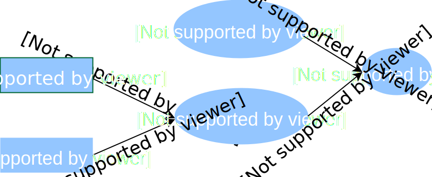

JSON for Linking Data
This section introduces basic concepts of JSON for Linked Data (JSON-LD). The reader should look at the JSON-LD specification for in-depth documentation.
JSON-LD is a very flexible format allowing multiple json representation for the same content as shown in the following example:
Why JSON-LD ?
First of all a json-ld document is a json document. So what is the difference ? To help answer the question, let consider the following json document:
{
"identifier" : "0e3b328c-c18f-4e64-9a0e-f6e4f32b36da",
"python":"fast",
"java" : ""
}
What this document is about ? Python and Java as programming languages or as snake and the indonesia island respectively ? The json document is ambiguous. With just the payload, human and software agents can’t confidently infer the document topic without knowing from which endpoint it was obtained.
semantic preserving data exchange
Json-ld specification was created to solve the above ambiguity issue among other features it brings to the way web resources are exchanged through API. To enable semantic preserving data exchange, it adds a context object to the json document within which each json keys and/or values can be mapped to a unique identifier as shown in the following document:
{
"@context":{
"python":"http://programminglanguages.org/python",
"java":"http://programminglanguages.org/java",
"identifier":"@id"
},
"identifier" : "0e3b328c-c18f-4e64-9a0e-f6e4f32b36da",
"python":"fast",
"java" : ""
}
A JSON-LD context is simply a mapping:
- from a key often called prefix and sometimes aliases: python, java as well as identifier are prefixes
- to a value often called namespace: *http://programminglanguages.org/python* is a namespace
The JSON-LD document can be seen within the json-ld playground.
When written with a context object, a JSON-LD document is said to be compacted. On the opposite, the json-ld context is said expanded when its context is applied, i.e all prefixes as well as aliases are replaced by their corresponding namespaces. Find below the expanded form of the json-ld document example above:
{
"@id" : "0e3b328c-c18f-4e64-9a0e-f6e4f32b36da",
"http://programminglanguages.org/python":"fast",
"http://programminglanguages.org/java" : ""
}
JSON-LD data model
A JSON-LD document can be seen a json tree or as a RDF document (Resource description Framework).
The reader can checkout the full RDF recommendation here.
As one of the multiple RDF document serialization format, a JSON-LD document can be seen as a directed graph where every of piece of knowledge about a thing always comes in three and is broken down in (**subject, predicate, object**):

(subject, predicate, object) is often called a statement, an assertion, a fact or more technically a triple just like in most programming languages (python, java,…). So a JSON-LD document can be seen as a collection of triples.
The graph vocabulary is often used when naming elements of a triple:
- the subject and the object are called nodes
- while the predicate is called property or arc
Here is the set of triples corresponding to the json-ld document above:

…
Cool URIs don’t change
Elements of a JSON-LD document have URIs as identifiers. For example, the URI of the Allen human brain atlas ontology (as integrated in NIP) is http://api.brainmap.org/api/v2/data/Structure, while the URI of the specific term “gray matter” is http://api.brainmap. org/api/v2/data/Structure/4006 . The previous two URIs can have a short form which is called prefix (a stable string) for the ontology and CURIE for the ontology entities. Let take again the previous example. The prefix name of (the short form of) “ http://api.brainmap. org/api/v2/data/Structure ” can be ‘HBA’ while the curie of the term ’’grey matter" is ‘HBA:4006’. Given the curie ‘HBA:4006’, ‘HBA’ is the prefix name and ‘4006’ is the fragment.